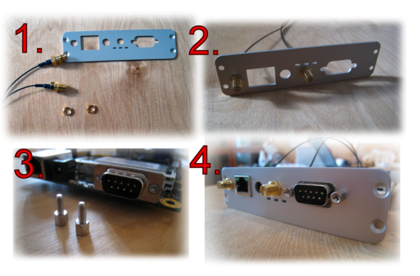
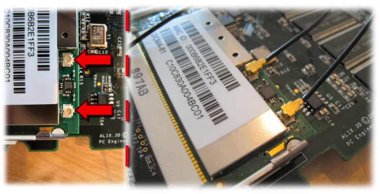
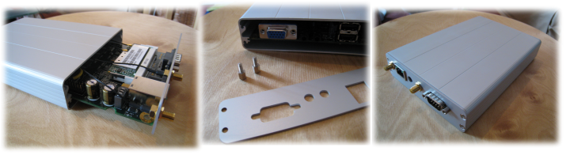

These are step-by-step instructions on how to assemble your own OpenRemote hardware reference implementation. Please check the bill of materials for specific details on the parts, how to order them, etc.
In addition, you will need a screw driver. A small set of (non-cutting) pliers might also come in handy.
The parts are sensitive to electro-static discharge. Especially the WiFi radio card. Make sure you touch your hands and the bag the parts come in to a grounding point before you start! |
Step 1: Motherboard
The board has an AMD Geode LX800 (500MHz) CPU -- it is the chip with black circle on the top left of the board in the picture below.
It also has two MiniPCI sockets, one on each side of the board. You can see one of them in the picture below -- it is the white vertical socket on the right side. The second MiniPCI socket is on the other side of the board along with CompactFlash socket. You can see the picture as part of step 3.
On the left is the VGA, audio and two USB connectors (the two USB connectors are stacked).
On the right hand side of the mainboard there's a serial (DB9) connector, power input and ethernet jack.
Step 2: Plug In WiFi Card
Insert the WiFi card into the MiniPCI socket. Go in at about 45' angle.
Make sure you push the card deep enough into the socket. In the picture below you will see a small vertical cut on the bottom-left side of the card. The card should go deep enough to fill this gap. The picture is showing the card only half-way in.
It can be a bit tight but you shouldn't need too much force to do this.
Be careful when handling the WiFi radio card. It is especially sensitive to electro-static discharge.
Once the WiFi card is inserted into the socket, push it down to level with the mainboard. You will hear a snap sound and the circular plastic hooks will secure the card in place (shown in the picture below).
Step 3: CompactFlash Storage
Flip the mainboard around and you will find two sockets on the backside (see picture below). One is the CompactFlash socket (horizontal white socket in the picture) and the other is the second MiniPCI socket (vertical white socket in the picture).
We will have no use for the second MiniPCI at this point but will need to insert the CompactFlash card. Simply slide the card into the rails on the socket and push it to the end. No force is necessary.

You can either prepare the CF card in advance with a bootable operating system before assembling the hardware, or you can insert an empty card and later install the operating system from an external USB flash drive. The operating system and software installation is documented in reference implementation software installation instructions.
Step 4: Back Panel
Next get the back panel and two I-PEX pigtail cables (picture #1 below). The I-PEX cables will connect to the WiFi card as seen in the steps that will follow. It is a good idea to have them grounded on the back panel and on the mainboard before connecting to the WiFi radio card first though. Unscrew the bolts from the I-PEX connectors.
Insert the I-PEX cables through the holes in the back panel. Screw the bolts back in. You may want to use small pliers to fasten the bolts unless you have nimble and strong fingers. See picture #2 below.
Next unscrew the hex nuts from the DB9 (serial) connector. These tend to be tight at first so use pliers to help open the bolts. These are shown in picture #3 below.
Finally put the back panel in place on the mainboard and secure it by reinserting the hex nuts on the DB9 connector. Make sure you screw the hex nuts back in tightly, otherwise they will come off every time you unscrew a serial cable from the box. See picture #4 below.

Step 5: Attach I-PEX cables
Next attach the two I-PEX cables to the WiFi card. The I-PEX connectors are the two tiny white connectors in the corner of the wireless card -- pointed by the two red arrows on the left side of the image below. This is where the cables connect to.
This is by far the trickiest part of the assembly. The connectors are tinyand the metal parts are a very tight fit. I found the best way to get the cables connected was to slightly rotate the cable-end from side to side while pushing it down towards the connector. This seems to loosen the connector a bit or help you find the correct angle at which the cable snaps in place. This step usually requires some patience!

Step 6: Final Assembly
The last step is purely to finish things off with the enclosure. Take the assembled mainboard and place it on the grooves of the aluminum enclosure and push it all the way in. Secure in place by four screws in the corners of the back panel.
Insert the front panel. First remove the hex nuts from the VGA connector, put the front panel in place and fasten the VGA hex nuts again. Use four screws to finish the front panel attachment to the enclosure.
Finally attach the antennas to their connectors.

Plug the power adapter to the wall and then plug it into your unit. You should see the green power led light up. Also, the three leds under the second antenna light up first and if everything is working correctly, one of them is left lit once the firmware is ready to go.
At this point you can connect the box to a screen via the VGA connector. If your CF card was preinstalled with an operating system, it should boot up. If not, you will most likely see a message Missing an operating system. To install an operating system from an external USB flash drive, proceed to reference implementation software installation instructions.
{kind=link}
{kind=link}
{kind=link}
{kind=link}
{kind=link}
{kind=link}
{kind=link}